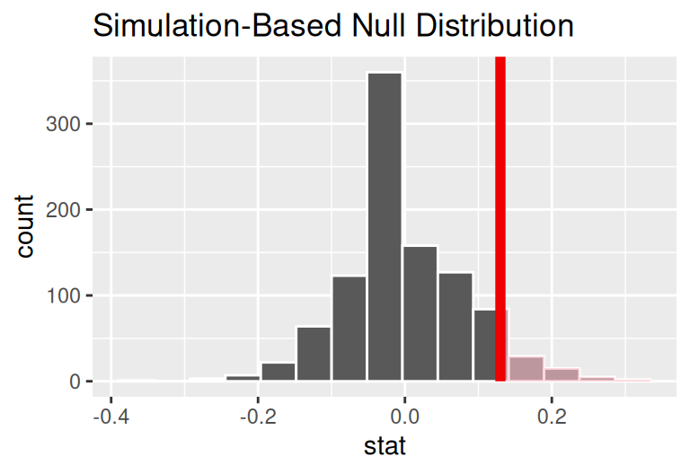
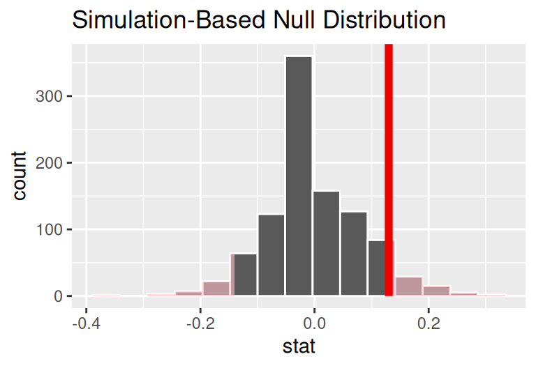
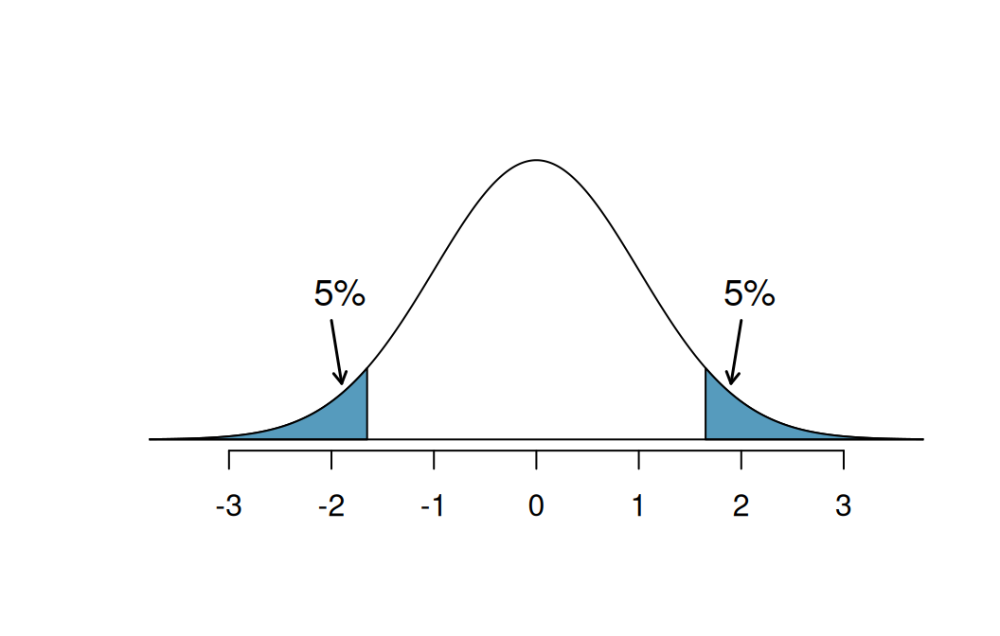

| Truth | Reject H0 | Fail to reject H0 |
|---|---|---|
| H0 is true | Type I Error | Good decision |
| HA is true | Good decision | Type II Error |
Wrong by Design
Type I errors, Type II errors, and statistical power
Hypothesis tests are not flawless1. There are many ways in which they can be misused: the hypotheses can be poorly formulated, the p-value miscalculated or, more often, misinterpreted. But even a hypothesis test conducted by an expert practitioner is subject to arriving at an erroneous conclusion.
If the setting of the problem requires that a binary decision be made regarding the null hypothesis - that it be either rejected or retained - then it’s possible to come to the wrong conclusion. Just as in the court system, where innocent people are sometimes wrongly convicted and the guilty sometimes walk free, so too can the conclusion of a hypothesis test be in error.
What distinguishes statistical hypothesis tests from a court system, however, is that our framework allows us to quantify and control how often the data lead us to the incorrect conclusion.
Statistical Errors
In a hypothesis test, there are two competing hypotheses: the null and the alternative, often abbreviated as \(H_0\) and \(H_A\). When the p-value is sufficiently low, \(H_0\) is rejected as a viable explanation for the data. When the p-value is high, we fail to reject \(H_0\).
A statistical error is made whenever the conclusion of the test is contrary to the underlying truth regarding the null hypothesis.
- Type I Error
- Rejecting the null hypothesis when it is actually true. Also called a false positive.
- Type II Error
- Failing to reject the null hypothesis when the alternative hypothesis is actually true. Also called a false negative.
The test comes to the correct conclusion in settings where it fails to reject a null hypothesis that is actually true and when it rejects the null hypothesis when the alternative hypothesis is true. These four scenarios can be laid out as follows.
To build your understanding of these different types of errors, work through a few exercises.
Exercise 1
In a US court, the defendant is either innocent \((H_0)\) or guilty \((H_A).\) What does a type I Error represent in this context? What does a type II Error represent? The table above may be useful.
Check your answer
If the court makes a type I Error, this means the defendant is innocent \((H_0\) true) but wrongly convicted. A type II Error means the court failed to reject \(H_0\) (i.e., failed to convict the person) when they were in fact guilty \((H_A\) true).Exercise 2
Consider the case of Kristen Gilbert, the nurse on trial for causing Code Blue emergencies at her hospital. The court eventually found her guilty of the charges and sentenced her to life in prison. If in fact she was innocent, what type of error did the court commit?
Check your answer
This would be a Type I error: rejecting the null hypothesis that she is innocent when it was in fact true.
Exercise 3
How could we reduce the probability of making a type I error in US courts? What influence would this have on the probability of making a type II error?
Check your answer
To lower the type I Error rate, we might raise our standard for conviction from “beyond a reasonable doubt” to “beyond a conceivable doubt” so fewer people would be wrongly convicted. However, this would also make it more difficult to convict the people who are actually guilty, so we would make more type II Errors.
Exercise 4
How could we reduce the probability of making a type II error rate in US courts? What influence would this have on the probability of making a type I error?
Check your answer
To lower the type II Error rate, we want to convict more guilty people. We could lower the standards for conviction from “beyond a reasonable doubt” to “beyond a little doubt”. Lowering the bar for guilt will also result in more wrongful convictions, raising the type I Error rate.
The example and guided practice above provide an important lesson: if we reduce how often we make one type of error, we generally make more of the other type. This threshold for how much evidence is require is called the significance level.
- Significance level, \(\alpha\)
- A number between 0 and 1 that serves as the threshold for the p-value. The null hypothesis is rejected when the p-value \(< \alpha\), and the finding is found “statistically significant”.
Handling Type I vs Type 2 Errors
Hypothesis tests do not treat Type I and Type II error equally. (Technically, this is called the Neyman-Pearson hypothesis testing framework which is widely adopted.) The \(\alpha\) level is the probability of making a Type I error when then null is true. That is, a level \(\alpha = 0.05\) test is designed to have a 5% chance to reject the null if the null was true.
The power of a test is 1 minus the probability of a Type 2 error if the alternative was true. That is, if the alternative is true the power is our probability of detecting it.
Hypothesis tests are more concerned with Type I error, and thus are always designed to have a fixed \(\alpha\) level control. So, if you have 10 data points or 100 data points you can design your test to only have a 5% Type I error in both situations.
The trade off is your test may have low power, and not be able to detect the alternative. This would result in your test being very conservative and accepting the null most of the time.
It is not always possible to have a low alpha level AND a high power, sometimes optimizing for one is a loss in the other. In theoretical statistics, for any fixed \(\alpha\) level there is a uniformly most powerful test, this is the test that has the highest power at that alpha level. That is, among all tests that only make Type 1 error’s 5% of the time, such a test has the highest probability of not making a Type II error. Such theory is covered in more advanced courses in statistics.
So when comparing two level \(\alpha = 0.05\) tests, they have the same Type I error rate. So it is incorrect to say one test is better than the other in terms of its probability of false positives. Also, increasing sample size WILL NOT decrease the Type I error rate, the error rate is controlled at all sample sizes to be exactly 5%. What you do benefit from with more sample size is increased power, you gain the ability to correctly reject the null more often when the alternative is true.
By convention, \(\alpha = 0.05\), however you should adjust the significance level based on the application. Certain scientific fields might tend to use a slightly higher or lower threshold for what constitutes statistical significance. In a setting where the decisions have very different real-world consequences, those, too, can factor into the choice of \(\alpha\).
However, note that \(5\%\) is \(1/20\) so out of 20 perfectly run hypothesis test where the null was true every time, in expectation 1 will draw the wrong conclusions and reject the null. Extrapolate that to the 1000’s of scientific articles published each year.
If making a type I error is dangerous or especially costly, you should choose a small significance level (e.g., 0.01 or 0.001). You will have lower power as a result, but when you do reject the null you can be really confident there is an affect going on.
If you want to be very cautious about rejecting the null hypothesis, you should demand very strong evidence favoring the alternative \(H_A\) before we would reject \(H_0.\)
If a type II error is relatively more dangerous or much more costly than a type I error, then we should choose a higher significance level (e.g., 0.10). Here we want to be cautious about failing to reject \(H_0\) when the null is actually false.
Example: Blood Thinners and Survival
Cardiopulmonary resuscitation (CPR) is a procedure used on individuals suffering a heart attack when other emergency resources are unavailable. This procedure is helpful in providing some blood circulation to keep a person alive, but CPR chest compression can also cause internal injuries. Internal bleeding and other injuries that can result from CPR complicate additional treatment efforts. For instance, blood thinners may be used to help release a clot that is causing the heart attack once a patient arrives in the hospital. However, blood thinners negatively affect internal injuries.
Here we consider an experiment with patients who underwent CPR for a heart attack and were subsequently admitted to a hospital. Each patient was randomly assigned to either receive a blood thinner (treatment group) or not receive a blood thinner (control group). The outcome variable of interest was whether the patient survived for at least 24 hours.
Exercise 5
Form hypotheses for this study in plain and statistical language. Let \(p_C\) represent the true survival rate of people who do not receive a blood thinner (corresponding to the control group) and \(p_T\) represent the survival rate for people receiving a blood thinner (corresponding to the treatment group).
Check your answer
We want to understand whether blood thinners are helpful or harmful. We’ll consider both of these possibilities using a two-sided hypothesis test.
\(H_0:\) Blood thinners do not have an overall survival effect, i.e., the survival proportions are the same in each group. \(p_T - p_C = 0.\)
\(H_A:\) Blood thinners have an impact on survival, either positive or negative, but not zero. \(p_T - p_C \neq 0.\)
Note that if we had done a one-sided hypothesis test, the null hypothesis would remain the same but the alternative would change:
- \(H_A:\) Blood thinners have a positive impact on survival. \(p_T - p_C > 0.\)
There were 50 patients in the experiment who did not receive a blood thinner and 40 patients who did. The study results are shown in the table below.
| Group | Died | Survived | Total |
|---|---|---|---|
| Control | 39 | 11 | 50 |
| Treatment | 26 | 14 | 40 |
| Total | 65 | 25 | 90 |
Exercise 6
What is the observed survival rate in the control group? And in the treatment group? Also, provide a point estimate \((\hat{p}_T - \hat{p}_C)\) for the true difference in population survival proportions across the two groups: \(p_T - p_C.\)
Check your answer
Observed control survival rate: \(\hat{p}_C = \frac{11}{50} = 0.22.\) Treatment survival rate: \(\hat{p}_T = \frac{14}{40} = 0.35.\) Observed difference: \(\hat{p}_T - \hat{p}_C = 0.35 - 0.22 = 0.13.\)
According to the point estimate, for patients who have undergone CPR outside of the hospital, an additional 13% of these patients survive when they are treated with blood thinners. However, we wonder if this difference could be easily explainable by chance, if the treatment has no effect on survival.
As we did in the past study, we will simulate what type of differences we might see from chance alone under the null hypothesis. By randomly assigning each of the patient’s files to a “simulated treatment” or “simulated control” allocation, we get a new grouping. If we repeat this simulation 1,000 times, we can build a null distribution of the differences shown in the figure below.

The right tail area is 0.135. (Note: it is only a coincidence that we also have \(\hat{p}_T - \hat{p}_C=0.13.)\) However, contrary to how we calculated the p-value in previous studies, the p-value of this test is not actually the tail area we calculated, i.e., it’s not 0.135!
The p-value is defined as the chance of a test statistic as extreme or even more extreme than the one observed under the assumptions of the null hypothesis. Importantly, “more extreme” is defined based on the alternative hypothesis. If the alternative hypothesis suggests a two-sided test, then you must be open to deviations in either direction.
In this case, any differences less than or equal to -0.13 would also provide equally strong evidence favoring the alternative hypothesis as a difference of +0.13 did. A difference of -0.13 would correspond to 13% higher survival rate in the control group than the treatment group. In the figure below we have also shaded these differences in the left tail of the distribution. These two shaded tails provide a visual representation of the p-value for a two-sided test.

For a two-sided test, take the single tail (in this case, 0.131) and double it to get the p-value: 0.262. Since this p-value is larger than 0.05, we do not reject the null hypothesis. That is, we do not find convincing evidence that the blood thinner has any influence on survival of patients who undergo CPR prior to arriving at the hospital.
Generally, to find a two-sided p-value we double the single tail area, which remains a reasonable approach even when the distribution is asymmetric. However, the approach can result in p-values larger than 1 when the point estimate is very near the mean in the null distribution; in such cases, we write that the p-value is 1. Also, very large p-values computed in this way (e.g., 0.85), may also be slightly inflated. Typically, we do not worry too much about the precision of very large p-values because they lead to the same analysis conclusion, even if the value is slightly off.
Tip
Default to a two-sided test.
We want to be rigorous and keep an open mind when we analyze data and evidence. Use a one-sided hypothesis test only if you truly have interest in only one direction.
Tip
Computing a p-value for a two-sided test.
First compute the p-value for one tail of the distribution, then double that value to get the two-sided p-value. That’s it!
Controlling the Type I Error rate
Now that we understand the difference between one-sided and two-sided tests, we must recognize when to use each type of test. Because of the result of increased error rates, it is never okay to change two-sided tests to one-sided tests after observing the data. Let’s explore the consequences of ignoring this advice.
Suppose we are interested in finding any difference from 0. We’ve created a smooth-looking null distribution representing differences due to chance in the figure below.
Suppose the sample difference was larger than 0. Then if we can flip to a one-sided test, we would use \(H_A:\) difference \(> 0.\) Now if we obtain any observation in the upper 5% of the distribution, we would reject \(H_0\) since the p-value would just be a the single tail. Thus, if the null hypothesis is true, we incorrectly reject the null hypothesis about 5% of the time when the sample mean is above the null value, as shown in the figure.
Suppose the sample difference was smaller than 0. Then if we change to a one-sided test, we would use \(H_A:\) difference \(< 0.\) If the observed difference falls in the lower 5% of the figure, we would reject \(H_0.\) That is, if the null hypothesis is true, then we would observe this situation about 5% of the time.
By examining these two scenarios, we can determine that we will make a type I error \(5\%+5\%=10\%\) of the time if we are allowed to swap to the “best” one-sided test for the data. This is twice the error rate we prescribed with our significance level: \(\alpha=0.05\) (!).

Caution
Hypothesis tests should be set up before seeing the data.
After observing data, it is tempting to turn a two-sided test into a one-sided test. Avoid this temptation. Hypotheses should be set up before observing the data.
Power
Often times in planning a study there are two competing considerations:
- We want to collect enough data that we can detect important effects but…
- Collecting data can be expensive in terms of money, time, and suffering, so we want to minimize the amount of data we collect.
As an example, imagine you are working to develop a new drug to reduce to size of tumors and you would like to test the effectiveness of the drug on mice. The more data that you collect, the greater your ability to detect even slight reductions in tumor size due to your drug. But more is data is not always better. Here, collecting data means paying researchers and sacrificing mice, so there is a cost, both financial and ethical, to collecting more data.
One way to balance these two competing needs is to frame the problem as follows: what is the smallest sample size that I would need to have a high probability of detecting an effect of the drug, if it is in fact effective? This probability is a vital consideration when planning a study. It is called the statistical power of the test.
- Power
- The probability of rejecting the null hypothesis when the null hypothesis is false This probability depends on how big the effect is (e.g., how good the medical treatment is) as well as the sample size.
Statistical power is a good thing: the more power that you have, the lower the chance that you’ll make a decision error. But what kind exactly?
Exercise 7
Review the definitions of Type I and Type II error at the beginning of these notes. How does the concept of power relate mathematically to the probability of committing these two types of errors?
Check your answer
The power is directly related to the concept of a Type II error, failing to reject a null hypothesis that is false. Since the power is the probability of correctly rejecting a null hypothesis that is false, it can be calculated as one minus the probability of a Type II error. The probability of committing a Type II error is often assigned the Greek letter beta, \(\beta\), therefore you will sometimes see power written as \(1 - \beta\).
In the example of the mouse study, if we collected very little data and the effect of our drug is very slight, then it’s conceivable that our power could be very very low, in the neighborhood of 10%. This means that there was only a 10% chance of that we’d be able to detect an effect of our drug. In this case, it could be argued that the design of our study was unethical because the mice that we studied were sacrificed in vain.
On the other hand, if we used 100,000 mice in our study, then the power would be very very high, say 99.99%. That is good, because we’re quite certain that we’d be able to detect an effect if it exists. But it would also be considered unethical because we sacrificed many mice unnecessarily. It is possible that we could have had almost as high a power, say 90%, with only 400 mice.
Calibrating the appropriate sample size that achieves a high enough statistical power - 80% or 90% - without incurring unnecessary costs is challenging work that is beyond the scope of this class. But the concept of power is essential to good science, so it’s important to be aware of. Whenever you come across a study that has a high p-value (that is, they failed to reject the null hypothesis), ask yourself: is it possible that this is just a low-powered study?
Summary
Although hypothesis testing provides a framework for making decisions based on data, as the analyst, you need to understand how and when the process can go wrong. That is, always keep in mind that the conclusion to a hypothesis test may not be right! Sometimes when the null hypothesis is true, we will accidentally reject it and commit a type I error; sometimes when the alternative hypothesis is true, we will fail to reject the null hypothesis and commit a type II error. The power of the test quantifies how likely it is to obtain data which will reject the null hypothesis when indeed the alternative is true; the power of the test is increased when larger sample sizes are taken.
Footnotes
These lecture notes adapted from Introduction to Modern Statistics, First Edition by Mine Çetinkaya-Rundel and Johanna Hardin, a textbook from the OpenIntro Project.↩︎